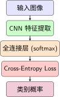
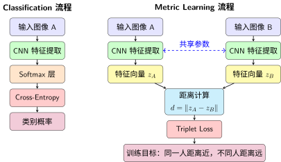
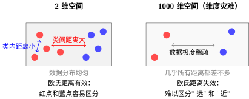
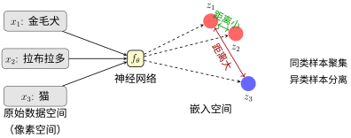
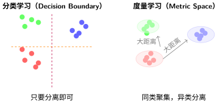

第一部分：导论与核心概念#
本部分介绍度量学习的基本概念，帮助你理解这一技术的核心价值与理论根基。
1.0 从 Classification 到 Metric Learning#
如果你已经学习过 Classification（分类），那么你应该对以下流程很熟悉：

这是标准的分类训练流程。但是，让我们思考一个问题：
场景：人脸识别系统#
假设你训练了一个1000人的分类器（Cross-Entropy Loss）。今天，来了一位新员工（第1001个人），你的模型会怎么做？
Classification的回答：
Softmax会强制从已知的1000个类别中选择一个
必然出错！
这就是 Classification 的局限：封闭世界假设 ，导致只能识别训练时见过的类别
Metric Learning 怎么做？#
我们不学"这是谁"，我们学"这两个是否是同一个人"：

Classification vs Metric Learning 流程对比
关键区别：
Classification 输出"这是第3类"
Metric Learning 输出"这两个特征向量的距离是0.3"
测试时：
计算新员工与数据库中所有人脸的特征向量距离
距离最近的就是匹配结果
关键：可以处理从未见过的新类别！
直观对比#
特性 |
Classification |
Metric Learning |
|---|---|---|
训练目标 |
学习决策边界（输出类别） |
学习相似度度量（输出特征向量） |
输出 |
类别概率分布 |
特征向量 + 距离 |
新类别 |
❌ 需要重新训练 |
✅ 直接计算距离 |
损失函数 |
Cross-Entropy Loss |
Contrastive/Triplet Loss |
数据 |
每张图1个标签 |
样本对/三元组关系 |
一句话总结#
Classification问的是：“这是什么？”
Metric Learning问的是：“这两个有多像？”
认识到这个区别，就是理解度量学习的第一步。接下来，我们深入探讨为什么需要这种新的学习范式。
1.1 为什么需要度量学习？#
1.1.1 Classification的三大困境#
让我们用一个例子来说明分类方法的问题。假设你正在开发一个公司员工识别系统：
第一天：公司只有3个人（张三、李四、王五）
训练一个3类分类器 ✓
工作良好 ✓
第一周：新来了10个员工
需要重新训练一个13类分类器
收集新员工的标注数据
重新训练整个网络
❌ 代价高昂
第一月：又新来了50个员工
每次新员工入职都要重新训练？
❌ 这不可行！
这就是分类方法的三大困境：
困境1：封闭世界的假设#
传统分类方法要求预先定义固定的类别集合。以标准卷积神经网络为例：
问题一：封闭世界的假设
当模型遇到训练时未见过的新类别时，Softmax输出无法给出有意义的判断。例如在人脸识别系统中，如果系统只训练了1000个人的数据，遇到第1001个人时，模型仍会强制从已知的1000个类别中选择一个，产生错误的识别结果。这种"封闭世界假设"与开放世界的实际需求严重不符。
封闭世界 vs 开放世界分类#
问题二：语义信息的丢失
考虑这样一个场景：在ImageNet上训练的分类器看到一张"金毛犬"的图片。虽然模型可能正确预测为"金毛寻回犬"，但它完全丢失了与其他犬种的语义关系信息。从人类认知的角度，我们知道金毛犬与拉布拉多犬的相似度远高于金毛犬与猫的相似度，但分类器的输出无法表达这种层级化的相似度结构。
问题三：数据效率的瓶颈
在小样本学习（Few-shot Learning）场景下，每个新类别仅有极少数样本（如1-shot或5-shot）。传统分类方法需要重新设计输出层并从头训练，这不仅计算开销大，更容易在少量数据上严重过拟合。
1.1.2 相似度学习的实际需求#
度量学习的核心洞见是：许多视觉任务本质上是相似度判断而非类别归属问题。人脸识别需要判断"这两张照片是否为同一个人"，而不是"这个人是谁"；图像检索需要找到"与查询图片相似的图片"，而不是"查询图片属于哪个预定义类别"。
这种范式转换带来几个关键优势：
开放集识别能力：系统可以处理训练时未见过的新类别，只需计算特征相似度即可判断
自然的拒绝机制：当查询与所有已知样本的相似度都低于阈值时，系统可以合理拒绝，而非强行分类
高效的增量学习：新增类别时无需修改模型结构，只需将新样本的特征加入数据库
可解释的相似度：可以直观展示"为什么这两张图片被认为是相似的"
1.1.3 人类认知的启示#
人类视觉系统的运作方式与度量学习高度一致。研究表明，人类在识别物体时并非简单地进行类别标签的分配，而是在一个连续的语义空间中建立物体的表征。在这个空间中，相似的概念聚集在一起，形成"概念云"而非"类别边界"。
当我们看到一张陌生动物的图片时，我们能够描述"它像猫但耳朵更长"——这种基于相似度的推理正是度量学习试图在机器中实现的能力。通过显式学习一个"好的"度量空间，我们希望神经网络能够像人类一样，基于样本间的相对关系进行推理。
1.2 什么是度量学习？#
1.2.1 度量空间的形式化定义#
深度度量学习标准流程#
在数学中，度量（Metric）是定义集合中元素之间"距离"的函数。给定集合 \(\mathcal{X}\)，度量 \(d: \mathcal{X} \times \mathcal{X} \to \mathbb{R}_{\geq 0}\) 必须满足以下公理 [XJRN02]：
非负性（Non-negativity）：\(d(x, y) \geq 0\)，且 \(d(x, y) = 0\) 当且仅当 \(x = y\)
对称性（Symmetry）：\(d(x, y) = d(y, x)\)
三角不等式（Triangle Inequality）：\(d(x, z) \leq d(x, y) + d(y, z)\)
具有度量的集合称为度量空间（Metric Space）。经典的欧氏距离 \(d_{\text{euclidean}}(x, y) = \sqrt{\sum_i (x_i - y_i)^2}\) 是最常用的度量，但它在高维空间中面临"维度灾难"，且假设所有特征维度具有同等重要性。
马氏距离（Mahalanobis Distance） 提供了更一般的框架：
其中 \(M\) 是一个半正定矩阵。当 \(M = I\)（单位矩阵）时，马氏距离退化为欧氏距离。通过调整 \(M\)，马氏距离可以考虑特征间的协方差结构，但本质上仍局限于线性变换。
1.2.2 维度灾难：为什么简单的距离度量不够？#
在深入度量学习之前，我们需要理解一个关键问题：为什么在高维空间中使用欧氏距离会有问题？
维度灾难（Curse of Dimensionality）#
想象你在一个房间里找东西：
2维空间（平面）：东西分布在平面上，你很容易判断"A离B近，离C远"
1000维空间（特征空间）：CNN提取的特征可能有上千维，距离的计算会变得很奇怪
维度灾难的核心问题：
当维度 \(d\) 增加时，空间的体积呈指数级增长，导致：
数据变得极度稀疏
所有点之间的距离趋向于相似
欧氏距离失去区分能力

维度灾难示意
数学直观#
考虑单位超立方体 \([0,1]^d\)：
2D时：两个随机点的期望欧氏距离约为 \(0.52\)
100D时：两个随机点的期望欧氏距离约为 \(3.2\)（接近最大距离 \(\sqrt{d} = 10\)）
1000D时：几乎所有点对之间的距离都集中在 \(31.6\) 附近
结论：在高维空间中，欧氏距离失去了"远近"的区分能力，因为所有距离都差不多大！
马氏距离的局限性#
马氏距离试图通过学习矩阵 \(M\) 来解决这个问题：
优势：可以考虑特征间的协方差，对不同特征赋予不同权重
局限：
仍然是线性变换，无法捕捉复杂的非线性关系
在极高维度下，学习 \(d \times d\) 矩阵 \(M\) 本身就很困难
需要大量数据才能可靠估计协方差矩阵
深度度量学习的解决方案#
核心思想：与其学习一个距离矩阵 \(M\)，不如学习一个非线性映射 \(f_\theta\)。
深度神经网络 \(f_\theta\) 可以：
非线性变换：捕捉复杂的特征关系
降维：将高维数据映射到低维嵌入空间（如128维）
端到端学习：同时学习特征提取和距离度量
这就是为什么深度度量学习比传统方法更强大——它不是在高维原始空间中使用固定距离，而是学习一个合适的低维空间，在这个空间中欧氏距离再次变得有意义。
1.2.3 度量学习的核心目标#
度量学习的根本目标是从数据中学习一个映射函数 \(f_\theta: \mathcal{X} \to \mathcal{Z}\)，将原始数据映射到一个嵌入空间（Embedding Space）\(\mathcal{Z}\)，使得在该空间中简单的距离度量（如欧氏距离或余弦距离）能够反映样本间的语义相似性。

嵌入空间概念示意
具体而言，我们希望映射后的特征满足：
其中 \(\text{sim}(x_i, x_j)\) 表示样本 \(x_i\) 和 \(x_j\) 的真实语义相似度。
这种框架比直接学习马氏距离 \(M\) 更为灵活，原因如下：
非线性表达能力：通过深度神经网络，\(f_\theta\) 可以捕捉复杂的非线性关系
层次化特征：深度网络天然产生层次化的特征表示，从低级特征到高级语义
端到端优化：特征提取与度量学习可以联合优化，避免分阶段方法的次优解
1.2.4 深度度量学习的流程#
深度度量学习的标准流程包含三个关键组件：
1. 嵌入网络（Embedding Network）
选择或设计一个参数化的神经网络 \(f_\theta\)，通常基于成熟的CNN架构（如ResNet、Inception）或Transformer架构。网络的最后一层被替换为嵌入层，输出固定维度的特征向量（通常为128维或256维）。
2. 距离度量
在嵌入空间中选择一个距离度量。最常用的选择包括：
欧氏距离（L2距离）：\(d(z_i, z_j) = \|z_i - z_j\|_2\)
余弦距离：\(d(z_i, z_j) = 1 - \frac{z_i \cdot z_j}{\|z_i\| \|z_j\|}\)
平方欧氏距离：\(d(z_i, z_j) = \|z_i - z_j\|_2^2\)（避免开方运算，优化更方便）
余弦距离对向量的模长不敏感，只关注方向，这在某些场景下更稳定。
3. 相似性约束与优化目标
给定训练数据的相似性判断（如"样本A与B相似，A与C不相似"），优化网络参数 \(\theta\) 使得：
相似样本在嵌入空间中的距离尽可能小
不相似样本在嵌入空间中的距离尽可能大
这通常通过设计特定的损失函数来实现，该损失函数惩罚违反上述约束的情况。
1.3 度量学习与其他学习范式的关系#
1.3.1 度量学习 vs 分类学习#
传统分类方法关注的是判别边界（Decision Boundary）的学习。Softmax交叉熵损失优化的是类别后验概率 \(P(y|x)\)，其目标是使不同类别的样本在特征空间中分离，但并不要求同类样本聚集。

分类学习 vs 度量学习
度量学习关注的是度量空间（Metric Space）的学习。其目标是使同类样本在嵌入空间中聚集成簇，同时不同类别之间有明确的分隔。这种表示方式不仅支持分类，还支持更灵活的相似度查询。
实践中，两者并非互斥。许多工作采用联合训练策略，同时优化分类损失和度量损失，取得比单一目标更好的效果 [WZLQ16]。
1.3.2 度量学习 vs 对比学习#
对比学习（Contrastive Learning）是近年来自监督学习领域的核心技术，与度量学习有着密切的关系。两者都涉及"拉近正样本、推远负样本"的思想，但存在重要区别：
监督信号来源不同：
度量学习使用人工标注的相似性标签（如同一人的不同照片为正样本）
对比学习使用数据增强生成的伪标签（如同一图片的不同增强视图为正样本）
应用场景不同：
度量学习主要用于有监督的人脸识别、行人重识别等任务
对比学习主要用于自监督的表征学习，为下游任务提供好的初始化
从方法论的角度，对比学习的许多技术（如InfoNCE损失、Momentum Encoder）可以迁移到度量学习中，反之亦然。两者共享着对"好的表示空间"的共同追求。
1.3.3 度量学习 vs 迁移学习#
度量学习本身可以被视为迁移学习的一种特殊形式。当我们使用在大规模数据集（如ImageNet）上预训练的CNN作为特征提取器，然后在新任务上微调或固定特征时，本质上是在迁移通用视觉知识。
度量学习的独特之处在于：
显式优化相似度：通过损失函数直接约束样本间的距离关系
任务适应性：可以根据特定任务（如细粒度分类）学习专门的度量
跨域泛化：学到的度量可以迁移到不同领域（如从通用图像到医学图像）
在实际应用中，度量学习常与迁移学习结合使用：先通过迁移学习获得良好的特征初始化，再通过度量学习优化特定任务的相似度度量。
1.4 度量学习的历史发展脉络#
1.4.1 传统度量学习（2000年代）#
度量学习的研究可以追溯到2002年Eric Xing等人在NIPS上提出的工作 [XJRN02]。早期的度量学习方法主要关注学习一个线性变换矩阵（马氏距离），代表性方法包括：
度量学习发展历程#
RCA（Relevant Component Analysis）：利用等价约束（must-link）学习全局距离度量
LMNN（Large Margin Nearest Neighbor）：通过最大化间隔学习局部线性度量，特别优化KNN分类性能
ITML（Information Theoretic Metric Learning）：在信息论框架下学习度量，保持原始距离的某些统计特性
这些方法的主要局限在于：
线性假设：无法捕捉复杂的非线性数据分布
计算开销：需要学习 \(d \times d\) 的矩阵，当特征维度高时计算量大
特征工程依赖：通常需要手工设计特征（如SIFT、HOG）作为输入
1.4.2 深度度量学习的兴起（2012-2016）#
随着深度学习的兴起，研究者开始将深度神经网络与度量学习结合，形成**深度度量学习（Deep Metric Learning, DML）**范式。
2015年，Florian Schroff等人提出的FaceNet [SKP15]是这一方向的里程碑工作。FaceNet使用三元组损失（Triplet Loss）训练一个CNN，将人脸图像映射到128维欧氏空间，使得同一人脸的距离小于不同人脸的距离。该系统在LFW人脸识别数据集上达到99.63%的准确率，首次超越了人类表现。
这一时期的核心洞见是：与其学习一个距离矩阵，不如学习一个能够将数据映射到合适空间的深度网络。这种端到端的学习方式避免了手工特征工程，可以直接处理原始像素。
1.4.3 现代发展（2017至今）#
近年来，深度度量学习在三个方向取得了重要进展：
采样策略的优化：研究发现，训练样本的选择对度量学习效果至关重要。硬负挖掘（Hard Negative Mining）和半硬负挖掘（Semi-Hard Negative Mining）等策略显著提升了训练效率和最终性能。
损失函数的创新：从简单的对比损失（Contrastive Loss）发展到三元组损失（Triplet Loss）、N-pair损失、Angular损失、Proxy损失等更精细的设计，每种损失针对不同场景优化。
架构创新：除了标准的Siamese网络和Triplet网络，还出现了Quadruplet网络、多尺度融合网络、注意力机制增强的度量学习网络等。
理论理解的深化：研究者开始从表示学习、几何分析的角度理解度量学习的本质，如分析嵌入空间的流形结构、度量坍缩（Metric Collapse）现象等。
1.5 度量学习的应用领域#
1.5.1 人脸识别与验证#
人脸识别是度量学习最成功的应用之一。现代人脸识别系统（如FaceNet、ArcFace、CosFace）都基于度量学习框架：
1:1人脸验证：判断两张照片是否为同一人，直接比较嵌入向量的距离
1:N人脸搜索：在数据库中查找与查询图片最相似的人脸
人脸聚类：将大量无标签人脸照片按身份自动分组
度量学习在此场景的优势在于：
支持开放集识别（无需预先知道所有人身份）
对姿态、光照变化具有鲁棒性
可解释性强，可以看到"为什么这两张人脸被认为相似"
1.5.2 行人重识别（Person Re-ID）#
行人重识别是在不同摄像头下匹配同一行人的任务。由于摄像头视角、光照、遮挡的变化，同一行人在不同视角下的外观差异可能大于不同行人在同一视角下的差异。
度量学习通过学习视角不变性特征，使同一行人的不同视角图像在嵌入空间中聚集。现代Re-ID系统通常结合：
全局特征：整体外观信息
局部特征：利用人体关键点对齐的局部区域特征
度量学习：优化最终的相似度度量
1.5.3 图像检索与推荐#
在电商、社交媒体等场景中，图像检索是核心功能。用户上传一张图片，系统需要返回视觉上相似的图片。
度量学习在此的应用包括：
视觉语义嵌入：将图像映射到语义空间，支持文本到图像、图像到图像的跨模态检索
细粒度检索：不仅检索同类别物品，还能区分颜色、款式、材质等细粒度属性
个性化推荐：结合用户历史行为，学习个性化的相似度度量
1.5.4 其他领域#
度量学习的思想还广泛应用于：
零样本学习（Zero-shot Learning）：通过度量学习建立视觉特征与语义嵌入的对应关系
异常检测：正常样本聚集，异常样本远离，通过距离阈值检测异常
签名验证、指纹识别：生物特征识别
3D形状检索：学习3D模型的相似度度量
医学影像：基于相似性的病灶检索与诊断辅助
小结#
恭喜你完成了第一部分的学习！让我们来回顾一下关键内容：
从Classification到Metric Learning#
Classification的局限：
❌ 封闭世界假设：只能识别训练时见过的类别
❌ 遇到新类别必须重新训练
❌ 无法拒绝未知类别
Metric Learning的解决方案：
✅ 学习通用特征表示（不是类别标签）
✅ 通过距离比较识别新类别
✅ 可以设置距离阈值拒绝未知样本
核心概念#
嵌入空间（Embedding Space）：将原始数据映射到低维空间，使得相似样本聚集
距离度量：在嵌入空间中用欧氏距离或余弦距离衡量相似度
推拉机制：训练目标是拉近正样本，推远负样本
一句话记住Metric Learning#
“我们不学’这是什么’，我们学’这两个有多像’。”
下一步#
在下一部分，我们将学习：
不同的网络架构（Siamese、Triplet、Quadruplet）
如何选择合适的架构
采样策略的基本概念
准备好了吗？让我们继续探索度量学习的世界！
参考文献
Florian Schroff, Dmitry Kalenichenko, and James Philbin. Facenet: a unified embedding for face recognition and clustering. In Proceedings of the IEEE conference on computer vision and pattern recognition, 815–823. 2015.
Yandong Wen, Kaipeng Zhang, Zhifeng Li, and Yu Qiao. A discriminative feature learning approach for deep face recognition. In European conference on computer vision, 499–515. Springer, 2016.
贡献者与修订历史
查看详细修订记录
-
4b228f72026-03-09 - Heyan Zhu: Fix tikz diagrams -
e1bf5e02026-03-09 - Heyan Zhu: Add metric leaning